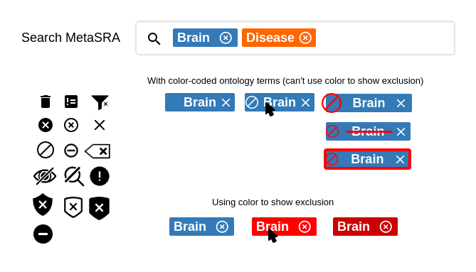

autocomplete - color coded
Sometimes the same term appears in different ontologies. One way to cope with this is to keep them all separate, and show them as different terms, maybe with color-coding to distinguish between different ontologies. This might be a usability headache though - the user might not know which ontology to pick? But merging the terms might create a lot of complexity also.
query builder
Because ontology terms are not uniquely identifiable by the actual text, it's probably a good idea to use discrete tags to represent query terms instead of free text. When you select an item via the autocomplete, it adds a tag, similar to entering email addresses in Gmail.
This shows one way to allow OR's in boolean queries while avoiding the complexity of nesting.
ontology term tags

Could we use only one search box, and let users click on and off terms to requrire/exclude them?
This seems tricky to me because we need to visually distinguish between 2 behaviors: deleting the search term, and excluding samples matching this search term (a NOT search.)
(This idea borrowed from the ENCODE search https://www.encodeproject.org/search/?searchTerm=stem+cell )
examples
Showing some good examples on the home page could be really helpful for making our first impression and explaining to the user how to use the tool.
This 2-line description wouldn't be appropriate if we decide we're only targeting bioinformaticists, but something as simple as this might be good if we're also targeting less-technical users.
The visual hierarchy of the page needs a lot of work - the colored examples shout too loudly.